ipconfig 是微软操作系统的计算机上用来控制网络连接的一个命令行工具。它的主要用来显示当前网络连接的配置信息（/all 参数）。
我的网络配置:

ip地址: 192.168.193.167
子网掩码: 255.255.255.0
默认网关：192.168.193.233
旁边的网络配置
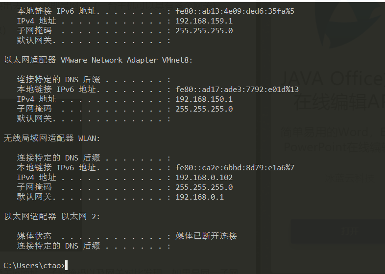
不同点: 物理地址，IP地址
相同点: 子网掩码，默认网关
问题：与旁边的计算机是否处于同一子网？
答： 是处于同一子网中。我的IP地址与子网掩码AND后是10.60.0.0，相邻计算机的IP地址与子网掩码AND后也是10.60.0.0
PING （Packet Internet Groper），因特网包探索器，用于测试网络连接量的程序 。ping 是工作在 TCP/IP 网络体系结构中应用层的一个服务命令， 主要是向特定的目的主机发送 ICMP（Internet Control Message Protocol 因特网报文控制协议）Echo 请求报文，测试目的站是否可达及了解其有关状态。
要测试到某计算机如 重庆交通大学 Web 服务器的连通性，可以使用 ping www.cqjtu.edu.cn 命令，也可直接使用 IP 地址。 请掌握使用该命令后屏幕显示的反馈回来信息的意思，如：TTL、时间等。
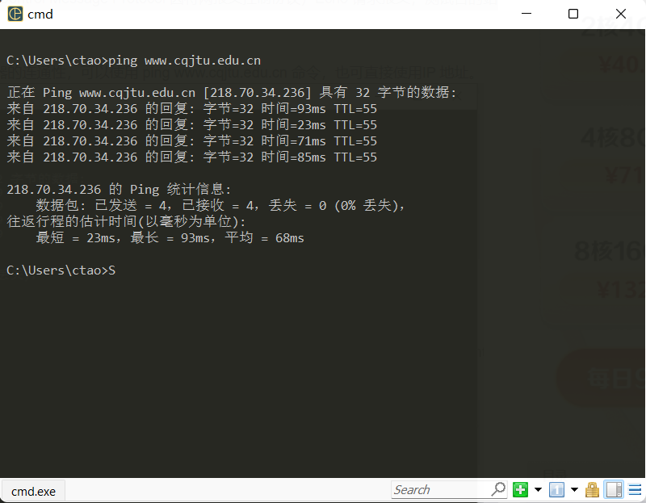此处尝试了ping了4次。其中TTL（8bit字段-ipv4）代表了ping发出去的那个测试数据具有的生命周期。计算方法为ttl向上最接近的2的n次方。例如此处最接近64.64-55=9.说明从主机到以上www.cqjtu.com这个地址经过了9次跳转。生命周期还有55。每跳一次就减1。 时间就代表了从主机到那个地址经过的时间就是延迟。
ping 自己的ip

使用 ping/? 命令了解该命令的各种选项并实际使用。
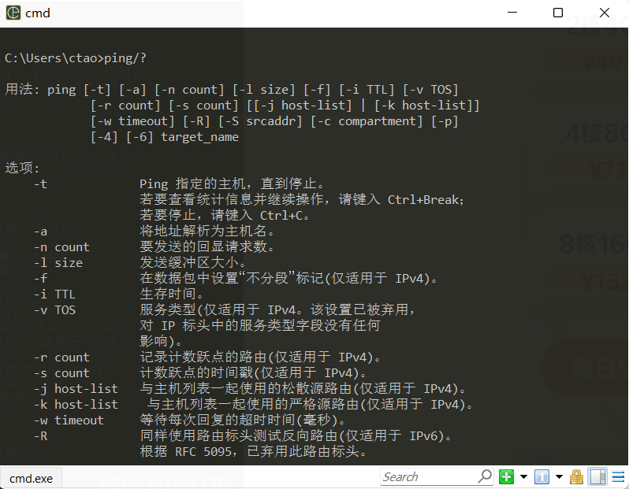问题：假设你不能 ping 通某计算机或 IP，但你确定该计算机和你之间的网络是连通的，那么可能的原因是什么？该如何处理能保证 ping 通？
采用由近及远的连通性测试来确定问题所在，测试自己计算机的状态，若成功，则说明本机网络软硬件工作正常，否则说明问题出现在本机，需检查本机TCP/IP配置即网卡状态等；若成功，说明本子网内部工作正常，否则问题出现在本机网络出口到交换机之间，需检查本机网卡到交换机的连线等；ping 192.168.1.233，测试到网关的连通性，若成功，说明本子网出口工作正常，否则问题出现在网关，需报告给网管；ping www.baidu.com，测试到百度的连通性，若成功则没有问题，否则问题出现在网关以外，自己无法解决。
问题二：假设ping 14.215.177.39没有问题，但ping百度的域名 www.baidu.com不行，那么可能的原因是什么？如何进行验证和解决？？
先ping ip成功说明网络是通的。域名ping不通，说明域名解析可能有问题，检查dns服务器配置问题，
TRACERT (Trace Route 的组合缩写)，也称为路由追踪，该命令行程序可用于跟踪 Internet 协议 （IP） 数据包传送到目标地址时经过的路径。
要了解到某计算机如 www.baidu.com 中间经过了哪些节点（路由器）及其它状态，可使用 tracert www.baidu.com 命令，查看反馈的信息，了解节点的个数。
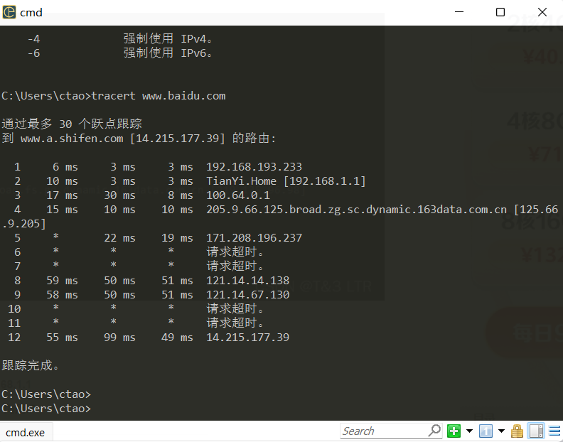222.176.65.185 中国 重庆 重庆市 电信
192.168.1.1 内网IP 内网IP
113.96.4.162 中国 广东省 广州市 电信
ping.pe 这个网站可以探测从全球主要的 ISP 到某站点如 https://qige.io 的线路状态，当然也包括各线路到该主机的路由情况。请使用浏览器访问 http://ping.pe/qige.io 进行了解。
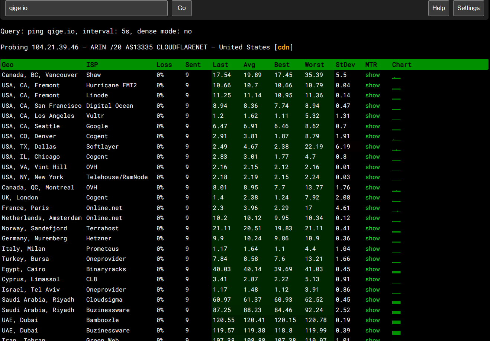问题一：tracert 能告诉我们路径上的节点以及大致的延迟等信息，那么它背后的原理是什么？本问题可结合第二部分的 Wireshark 实验进行验证。
答：向不同ip发送具有TTL值生命周期的数据包（ICMP），在路径上每一次路由器转发数据包都要把TTL减小一个，当TTL减为零的时候，路由器发送一个已超时的信息返回发出地址源头，或者在路途中找到了目的地址也会返回信息。
问题二：在以上两个实作中，如果你留意路径中的节点，你会发现无论是访问百度还是棋歌教学网，路径中的第一跳都是相同的，甚至你应该发现似乎前几个节点都是相同的，你的解释是什么？
答：因为在子网下，想要进入互联网都需要经过相同的网关，如果是校园网的话经历相同的节点或许会更多。
问题三：在追踪过程中，你可能会看到路径中某些节点显示为 * 号，这是发生了什么？
答：节点没有进行信息的反馈则会返回*，也有可能是路由节点出现了问题。
ARP（Address Resolution Protocol）即地址解析协议，是用于根据给定网络层地址即 IP 地址，查找并得到其对应的数据链路层地址即 MAC地址的协议。 ARP 协议定义在 1982 年的 RFC 826。
运行 arp -a 命令查看当前的 arp 缓存， 请留意缓存了些什么。
然后 ping 一下你旁边的计算机IP（注意，需保证该计算机的 IP 没有出现在 arp 缓存中，或者使用 arp -d * 先删除全部缓存），再次查看缓存，你会发现一些改变，请作出解释。
将IP地址解析为MAC地址的协议，缓存了静态以及动态的mac地址。静态地址不起作用。
请使用 arp /? 命令了解该命令的各种选项

一般而言，arp 缓存里常常会有网关的缓存，并且是动态类型的。
假设当前网关的 IP 地址是 192.168.0.1，MAC 地址是 5c-d9-98-f1-89-64，请使用 arp -s 192.168.0.1 5c-d9-98-f1-89-64 命令设置其为静态类型的。
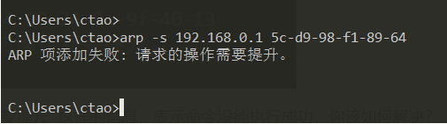
可以修改指定ip地址的时候需要使用netsh命令。netsh i i show in找到指定Idx, netsh -c “i i” add neighbors 【Idx】 【IP地址】【mac地址】修改指定IP的mac或用管理员身份运行cmder
问题一：在实作三中，为何缓存中常常有网关的信息？我们将网关或其他计算机的arp信息设置为静态有什么优缺点？
在进行数据传输的时候通常需要经过多个网关，arp会自动记录网关的信息方便下次进行数据传输的时候快速找到网关地址。 优点：提高了安全性 缺点：难以维护arp列表，如果有一个错误的信息很难将它分别出来。静态的信息是在太多，不像动态的就那么几个很容易清理和调试。
DHCP（Dynamic Host Configuration Protocol）即动态主机配置协议，是一个用于 IP 网络的网络协议，位于 OSI 模型的应用层，使用 UDP 协议工作，主要有两个用途： 1、用于内部网或网络服务供应商自动分配 IP 地址给用户 2、用于内部网管理员对所有电脑作中央管理 简单的说，DHCP 可以让计算机自动获取/释放网络配置。
一般地，我们自动获取的网络配置信息包括：IP 地址、子网掩码、网关 IP 以及 DNS 服务器 IP 等。使用 ipconfig/release 命令释放自动获取的网络配置，并用 ipconfig/renew 命令重新获取，了解 DHCP 工作过程和原理。
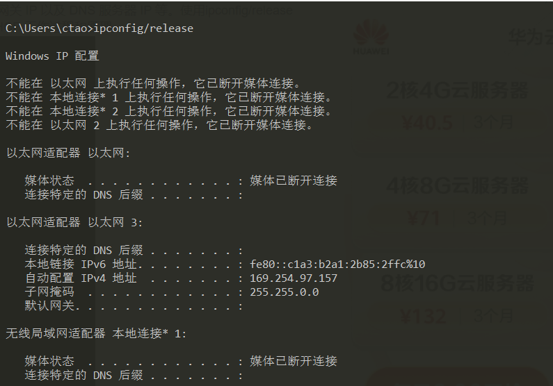
对于ipconfig/renew,操作时无反应，无法成功释放
搜寻答案来说：检查硬件是否正常运行，开启DHCP模块
问题一：在Windows系统下，如果由于某种原因计算机不能获取 DHCP 服务器的配置数据，那么Windows将会根据某种算法自动配置为 169.254.x.x 这样的 IP 地址。显然，这样的 IP 以及相关的配置信息是不能让我们真正接入 Internet 的，为什么？既然不能接入 Internet，那么Winodws系统采用这样的方案有什么意义？
为了让DHCP故障的设备不因为没有ip而被连接不上。因为自动配置的IP地址和信息只是短暂性的解决计算机不能获取 DHCP 服务器的配置数据的问题，要真正的接入Internet还是得本身计算机的正确IP地址
无论是使用 TCP 还是 UDP，任何一个网络服务都与特定的端口（Port Number）关联在一起。因此，每个端口都对应于某个通信协议/服务。 netstat（Network Statistics）是在内核中访问网络连接状态及其相关信息的命令行程序，可以显示路由表、实际的网络连接和网络接口设备的状态信息，以及与 IP、TCP、UDP 和 ICMP 协议相关的统计数据，一般用于检验本机各端口的网络服务运行状况。
Windows 系统将一些常用的端口与服务记录在 C:\WINDOWS\system32\drivers\etc\services文件中，请查看该文件了解常用的端口号分配。

使用 netstat -an 命令，查看计算机当前的网络连接状况。更多的 netstat 命令选项，可参考上面链接 4 和 5 。
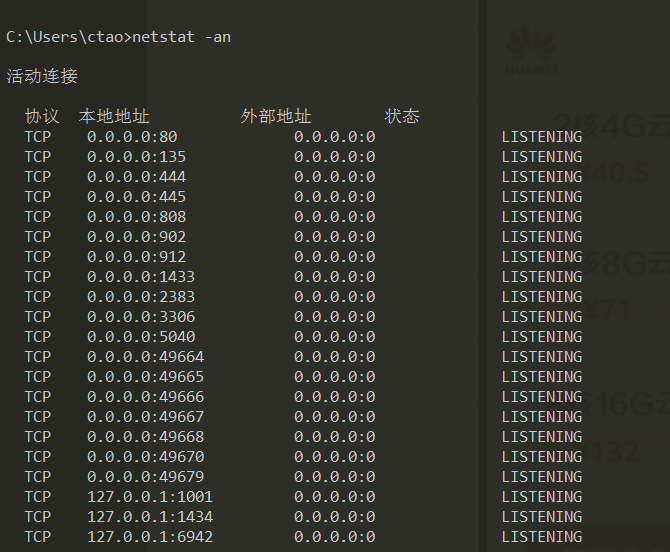
DNS（Domain Name System）即域名系统，是互联网的一项服务。它作为将域名和 IP 地址相互映射的一个分布式数据库，能够使人更方便地访问互联网。DNS 使用 TCP 和 UDP 的 53 号端口。
Windows 系统将一些固定的/静态的 DNS信息记录C:\WINDOWS\system32\drivers\etc\hosts 文件中，如我们常用的 localhost 就对应127.0.0.1 。请查看该文件看看有什么记录在该文件中。

解析过的 DNS 记录将会被缓存，以利于加快解析速度。请使用 ipconfig /displaydns 命令查看。我们也可以使用ipconfig /flushdns 命令来清除所有的 DNS 缓存。
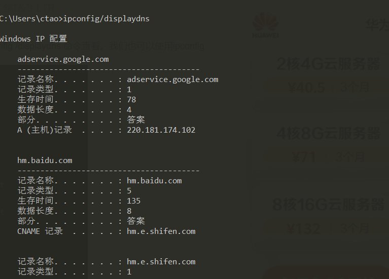
删除缓存后在查看
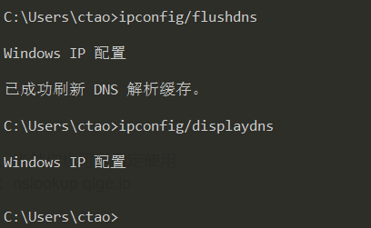
使用 nslookup qige.io 命令，将使用默认的 DNS 服务器查询该域名。当然你也可以指定使用 CloudFlare（1.1.1.1）或 Google（8.8.8.8） 的全球 DNS 服务器来解析，如：nslookup qige.io 8.8.8.8，当然，由于你懂的原因，这不一定会得到正确的答案。
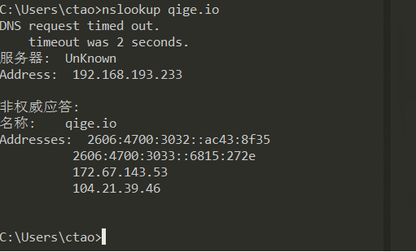

问题一：使用插件或自己修改hosts文件来屏蔽广告，思考一下这种方式为何能过滤广告？如果某些广告拦截失效，那么是什么原因？你应该怎么进行分析从而能够成功屏蔽它？
hosts文件在调用dns前截胡了，如果hosts里边有这个需要访问的ip就直接进入，不需要进入dns这个类似数据库一样的地方调用。 使用hosts修改后不生效原因：服务器设置了keep-alive，保持了长连接，只要不断开页面就不会重新解析域名
cache 即缓存，是 IT 领域一个重要的技术。我们此处提到的 cache 主要是浏览器缓存。 浏览器缓存是根据 HTTP 报文的缓存标识进行的，是性能优化中简单高效的一种优化方式了。一个优秀的缓存策略可以缩短网页请求资源的距离，减少延迟，并且由于缓存文件可以重复利用，还可以减少带宽，降低网络负荷。
打开 Chrome 或 Firefox 浏览器，访问 https://qige.io ，接下来敲 F12 键 或 Ctrl + Shift + I 组合键打开开发者工具，选择 Network 面板后刷新页面，你会在开发者工具底部看到加载该页面花费的时间。请进一步查看哪些文件被 cache了，哪些没有。

接下来仍在 Network 面板，选择 Disable cache 选项框，表明当前不使用 cache，页面数据全部来自于 Internet，刷新页面，再次在开发者工具底部查看加载该页面花费的时间。你可比对与有 cache 时的加载速度差异。
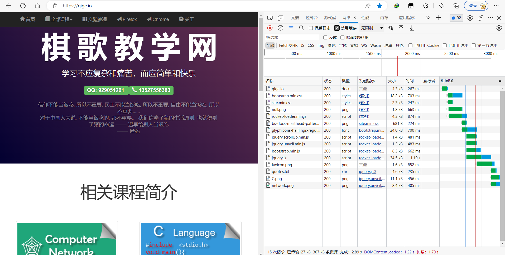
有cache的加载速度是加载：568 ms，没有cache的加载速度是加载：1.70s，图片的加载速度变慢，而且刷新的时候是张张的显示出来，不连贯
使用 Wireshark 任意进行抓包，熟悉 Ethernet 帧的结构，如：目的 MAC、源 MAC、类型、字段等。
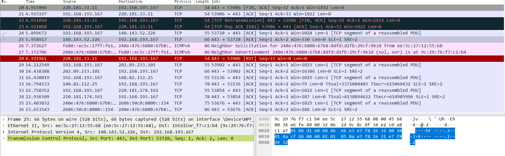
目的mac：9c 29 76 f7 c1 b4 源mac：ee 5c 27 12 55 68 类型：08 00
问题一：你会发现 Wireshark 展现给我们的帧中没有校验字段，请了解一下原因。
Wireshark 在抓包前，物理层网卡已经进行过校验，当我们使用Wireshark进行抓包，抓到的为校验后的包，看到的帧中是没有校验字段。
ping 你旁边的计算机（同一子网），同时用 Wireshark 抓这些包（可使用 icmp 关键字进行过滤以利于分析），记录一下发出帧的目的 MAC 地址以及返回帧的源 MAC 地址是多少？这个 MAC 地址是谁的？
然后 ping qige.io （或者本子网外的主机都可以），同时用 Wireshark 抓这些包（可 icmp 过滤），记录一下发出帧的目的 MAC 地址以及返回帧的源 MAC 地址是多少？这个 MAC 地址是谁的？
 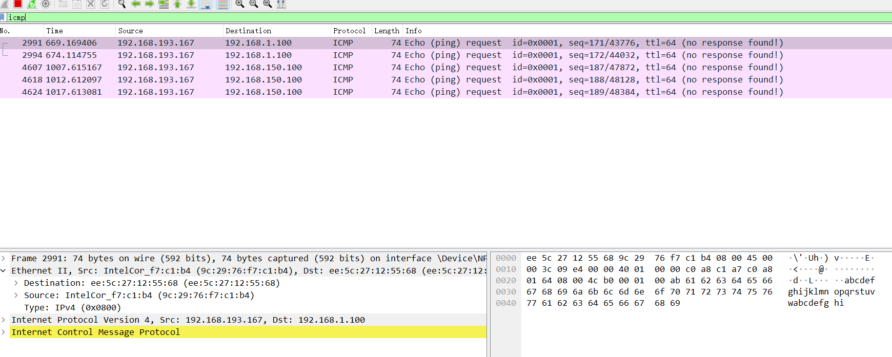
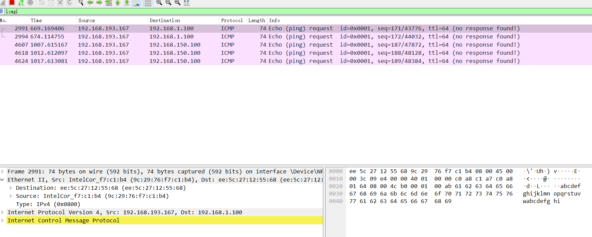
再次 ping www.cqjtu.edu.cn （或者本子网外的主机都可以），同时用 Wireshark 抓这些包（可 icmp 过滤），记录一下发出帧的目的 MAC 地址以及返回帧的源 MAC 地址又是多少？这个 MAC 地址又是谁的？
 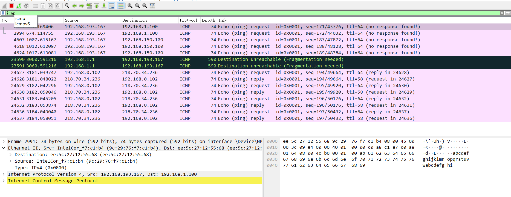
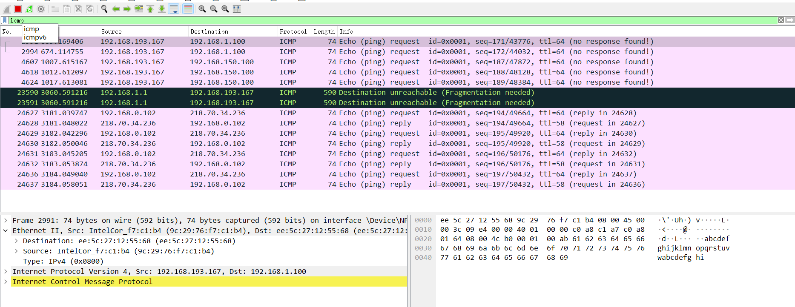
问题：通过以上的实验，你会发现： 1、访问本子网的计算机时，目的 MAC 就是该主机的 2、访问非本子网的计算机时，目的 MAC 是网关的 请问原因是什么？
主要是了解了在ping（连接）本子网下的主机和不在本子网的主机的目的mac和源mac地址的判断。本子网下就直接主机对主机，外网就是主机对网关。
1.为防止干扰，先使用 arp -d * 命令清空 arp 缓存
这里遇到了与之前相同的情况就是需要提升权限

ping 你旁边的计算机（同一子网），同时用 Wireshark 抓这些包（可 arp 过滤），查看 ARP 请求的格式以及请求的内容，注意观察该请求的目的 MAC 地址是什么。再查看一下该请求的回应，注意观察该回应的源 MAC 和目的 MAC 地址是什么。
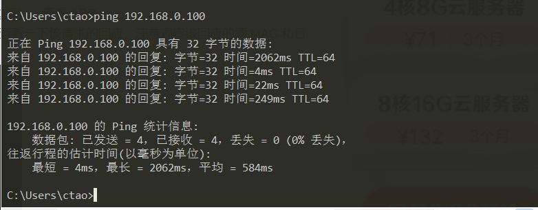 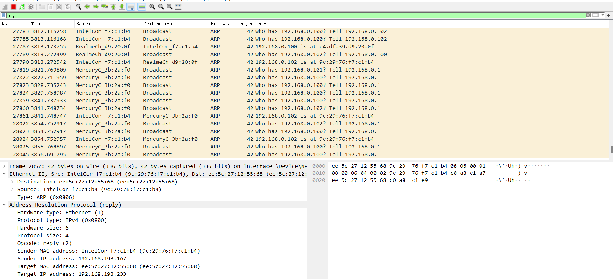
目的mac：9c:29:76:f7:c1:b4
源mac：ee:5c:27:12:55:68
再次使用 arp -d * 命令清空 arp 缓存
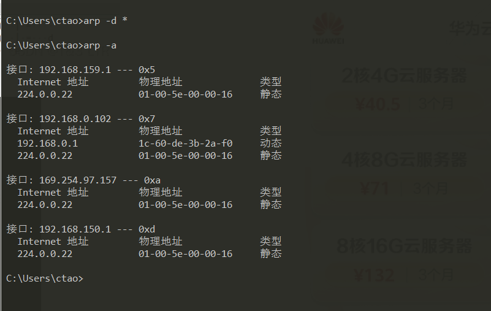
然后 ping qige.io （或者本子网外的主机都可以），同时用 Wireshark 抓这些包（可 arp 过滤）。查看这次 ARP请求的是什么，注意观察该请求是谁在回应。
 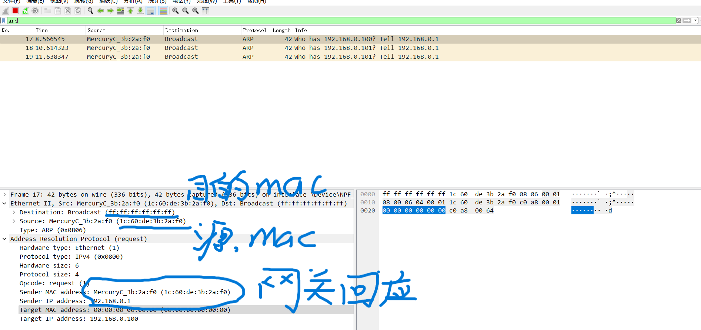
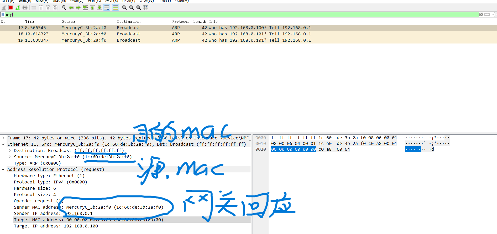
问题:通过以上的实验，你应该会发现 1、ARP 请求都是使用广播方式发送的 2、如果访问的是本子网的 IP，那么 ARP 解析将直接得到该 IP 对应的 MAC；如果访问的非本子网的 IP， 那么 ARP 解析将得到网关的 MAC。请问为什么？
访问同一子网的计算机时，如果ARP缓存中有该IP，则直接得到对应的MAC，否则会进行广播，在子网中找到这个ip，获得对应的MAC地址 访问不同子网的计算机时，通过网关发出去，目的IP收到后，将网关的MAC返回去，ARP解析就会得到网关的MAC。
使用 Wireshark 任意进行抓包（可用 ip 过滤），熟悉 IP包的结构，如：版本、头部长度、总长度、TTL、协议类型等字段。

首部长度 占4位，可表示的最大十进制数值是15，总长度：首部和数据之和的长度，单位为字节。总长度字段为16位，因此数据报的最大长度为2^16-1=65535字节。 TTL：生存时间（跳转节点数量表示） 协议 占8位 源地址 占32位 目的地址 占32位
问题：为提高效率，我们应该让 IP 的头部尽可能的精简。但在如此珍贵的 IP 头部你会发现既有头部长度字段，也有总长度字段。请问为什么？
传输时的识别IP总长度，提高传输效率。
根据规定，一个 IP 包最大可以有 64K 字节。但由于 Ethernet 帧的限制，当 IP 包的数据超过1500 字节时就会被发送方的数据链路层分段，然后在接收方的网络层重组。 缺省的，ping 命令只会向对方发送 32个字节的数据。我们可以使用 ping 202.202.240.16 -l 2000 命令指定要发送的数据长度。此时使用 Wireshark抓包（用 ip.addr == 202.202.240.16 进行过滤），了解 IP 包如何进行分段，如：分段标志、偏移量以及每个包的大小等
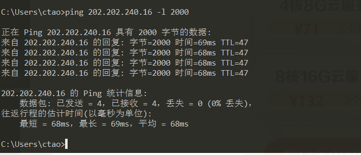 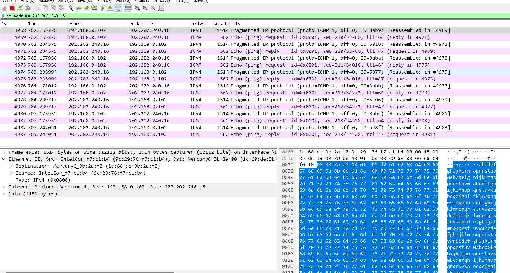
问题：分段与重组是一个耗费资源的操作，特别是当分段由传送路径上的节点即路由器来完成的时候，所以 IPv6 已经不允许分段了。那么 IPv6 中，如果路由器遇到了一个大数据包该怎么办？
转发到支持该数据传输的路由上或者丢弃该数据包。
在 IP 包头中有一个 TTL 字段用来限定该包可以在 Internet上传输多少跳（hops），一般该值设置为 64、128等。 在验证性实验部分我们使用了 tracert 命令进行路由追踪。其原理是主动设置 IP 包的 TTL 值，从 1 开始逐渐增加，直至到达最终目的主机。 请使用 tracert www.baidu.com 命令进行追踪，此时使用 Wireshark 抓包（用 icmp 过滤），分析每个发送包的 TTL 是如何进行改变的，从而理解路由追踪原理。

 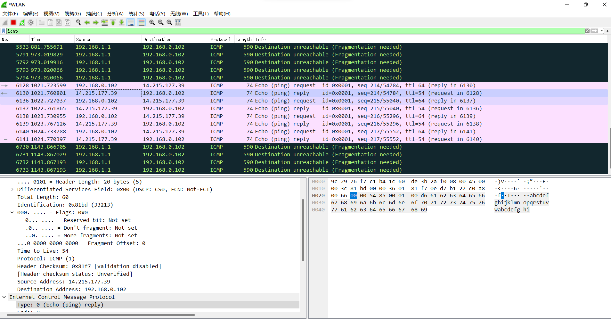
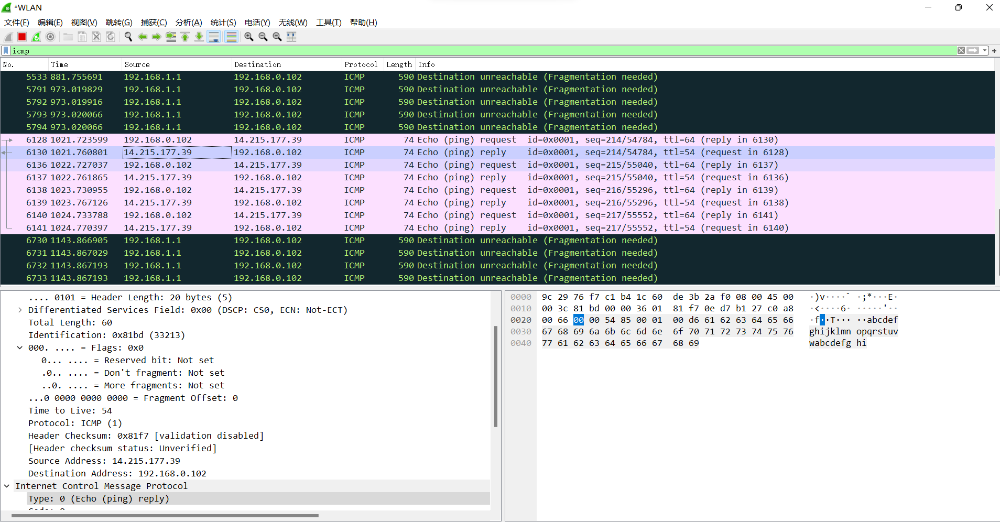
Tracert 首先发送TTL=1的数据包，然后每次发送会将TTL +1，直到目标响应或 TTL 达到最大值。
问题：在 IPv4 中，TTL 虽然定义为生命期即 Time To Live，但现实中我们都以跳数/节点数进行设置。如果你收到一个包，其 TTL 的值为 50，那么可以推断这个包从源点到你之间有多少跳？
接近50的2的阶次的数是64，所以有：64-54=10 跳
用 Wireshark 任意抓包（可用 tcp 过滤），熟悉 TCP 段的结构，如：源端口、目的端口、序列号、确认号、各种标志位等字段。
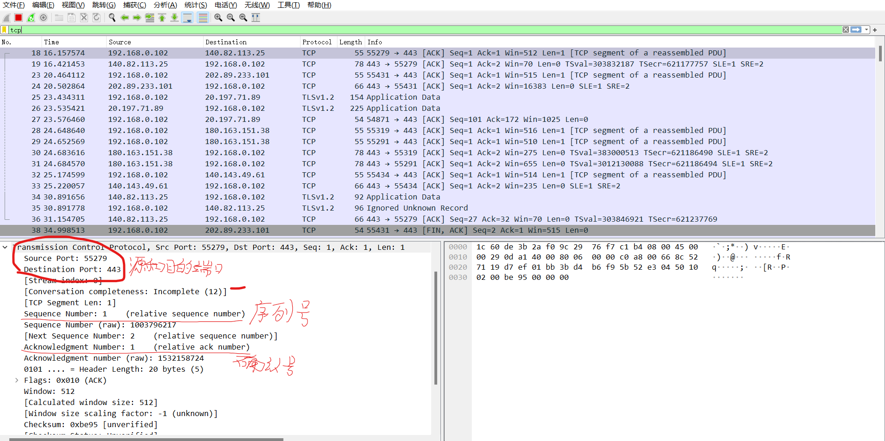
用 Wireshark 任意抓包（可用 udp 过滤），熟悉 UDP 段的结构，如：源端口、目的端口、长度等。
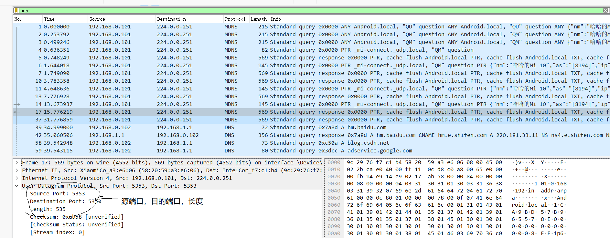
问题： 由上大家可以看到 UDP 的头部比 TCP 简单得多，但两者都有源和目的端口号。请问源和目的端口号用来干什么？
源端口是发送数据的端口，目的端口是对方主机接收数据的端口
打开浏览器访问 qige.io 网站，用 Wireshark 抓包（可用 tcp 过滤后再使用加上 Follow TCP Stream），不要立即停止 Wireshark 捕获，待页面显示完毕后再多等一段时间使得能够捕获释放连接的包。
请在你捕获的包中找到三次握手建立连接的包，并说明为何它们是用于建立连接的，有什么特征。
第一次握手，SYN为0，ACK为1
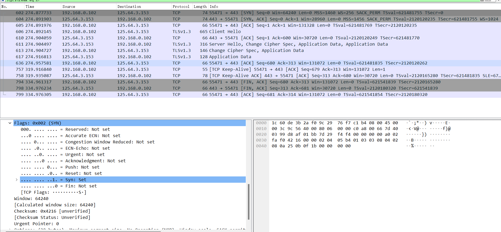
第二次握手，SYN为0，ACK为1

第三次握手，SYN为1，ACK为1
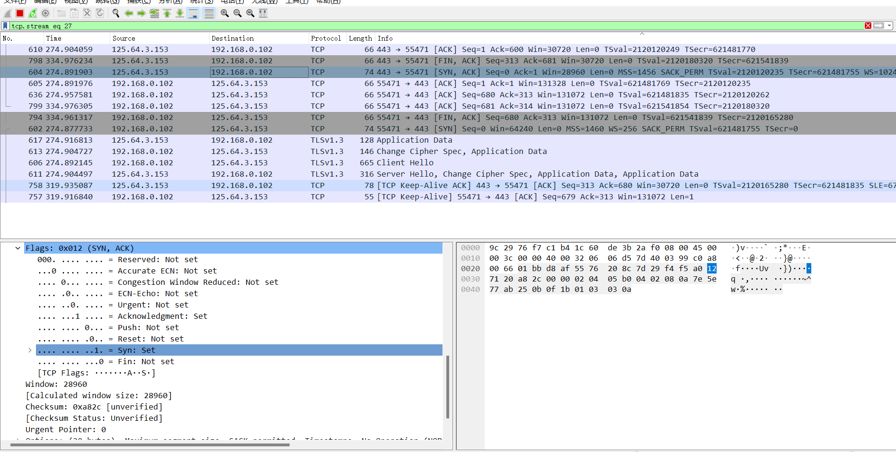
请在你捕获的包中找到四次挥手释放连接的包，并说明为何它们是用于释放连接的，有什么特征。
第一次握手，FIN为0，ACK为0
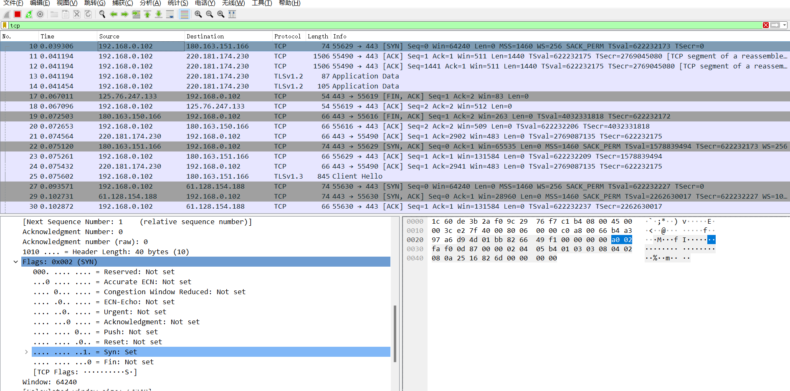
第二次握手，FIN为0，ACK为1
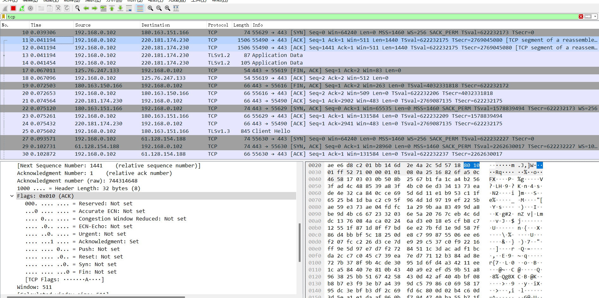
第三次握手，FIN为0，ACK为1

第三次握手，FIN为0，ACK为1
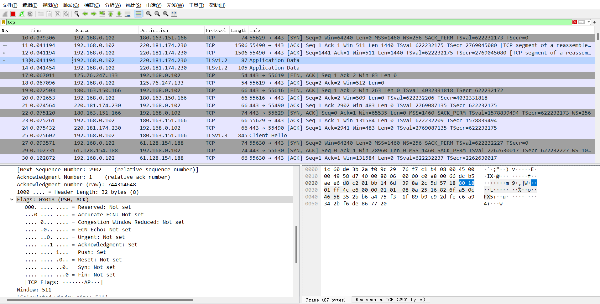
问题一：去掉 Follow TCP Stream，即不跟踪一个 TCP 流，你可能会看到访问 qige.io 时我们建立的连接有多个。请思考为什么会有多个连接？作用是什么？
短连接，一旦数据发送完成后，就会断开连接。断开连接后，页面已经缓存下来。需要重新进行发送数据的话，就要再次进行连接。实现多个用户进行访问，对业务频率不高的场合，节省通道的使用，不让其长期占用通道。
问题二：我们上面提到了释放连接需要四次挥手，有时你可能会抓到只有三次挥手。原因是什么？
第二次挥手的条件是服务端还有未完成的数据没有发送才进行第二次挥手，如果他发送已经完毕了，就直接第三步发出关闭连接的请求。
应用层的协议非常的多，我们只对 DNS 和 HTTP 进行相关的分析。
先使用 ipconfig /flushdns 命令清除缓存，再使用 nslookup qige.io 命令进行解析，同时用 Wireshark 任意抓包（可用 dns 过滤）。
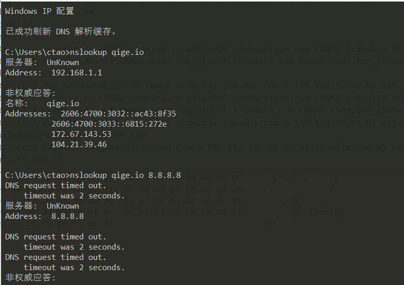 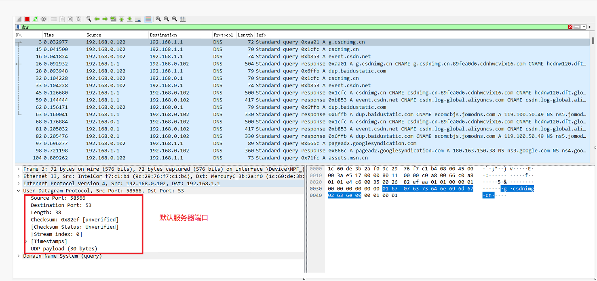
你应该可以看到当前计算机使用 UDP，向默认的 DNS 服务器的 53 号端口发出了查询请求，而 DNS 服务器的 53 号端口返回了结果。
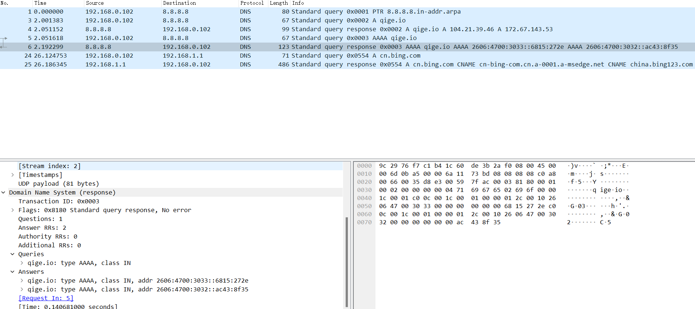
可了解一下 DNS 查询和应答的相关字段的含义
1.QR：查询/应答标志。0表示这是一个查询报文，1表示这是一个应答报文 2.opcode，定义查询和应答的类型。0表示标准查询，1表示反向查询（由IP地址获得主机域名），2表示请求服务器状态 3.AA，授权应答标志，仅由应答报文使用。1表示域名服务器是授权服务器 4.TC，截断标志，仅当DNS报文使用UDP服务时使用。因为UDP数据报有长度限制，所以过长的DNS报文将被截断。1表示DNS报文超过512字节，并被截断 5.RD，递归查询标志。1表示执行递归查询，即如果目标DNS服务器无法解析某个主机名，则它将向其他DNS服务器继续查询，如此递归，直到获得结果并把该结果返回给客户端。0表示执行迭代查询，即如果目标DNS服务器无法解析某个主机名，则它将自己知道的其他DNS服务器的IP地址返回给客户端，以供客户端参考 6.RA，允许递归标志。仅由应答报文使用，1表示DNS服务器支持递归查询 7.zero，这3位未用，必须设置为0 8.rcode，4位返回码，表示应答的状态。常用值有0（无错误）和3（域名不存在）清除缓存
问题：你可能会发现对同一个站点，我们发出的 DNS 解析请求不止一个，思考一下是什么原因？
访问的网址虽然只是一个域名，但是会有多个台服务器主机，域名解析服务器可能有很多个，所以会同时向几个域名解析服务器发出请求。
打开浏览器访问 qige.io 网站，用 Wireshark 抓包（可用http 过滤再加上 Follow TCP Stream），不要立即停止 Wireshark 捕获，待页面显示完毕后再多等一段时间以将释放连接的包捕获。
请在你捕获的包中找到 HTTP 请求包，查看请求使用的什么命令，如：GET, POST。并仔细了解请求的头部有哪些字段及其意义。
请求类型为:GET
Accept：告诉服务器客户端浏览器这边可以出里什么数据；
Accept-Encodeing：gzip 告诉服务器我能支持什么样的压缩格式
accept-language：告诉服务器浏览器支持的语言
Cache-control：告诉服务器是否缓存
Connection:keep-alive： 告诉服务器当前保持活跃（与服务器处于链接状态）
Host：远程服务器的域名
User-agent：客户端的一些信息，浏览器信息 版本
referer：当前页面上一个页面地址。一般用于服务器判断是否为同一个域名下的请求
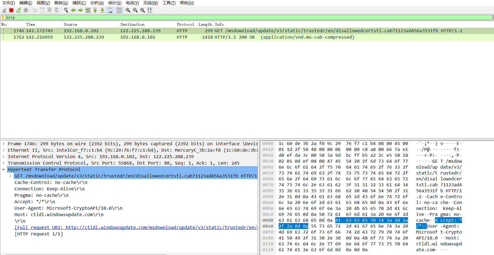 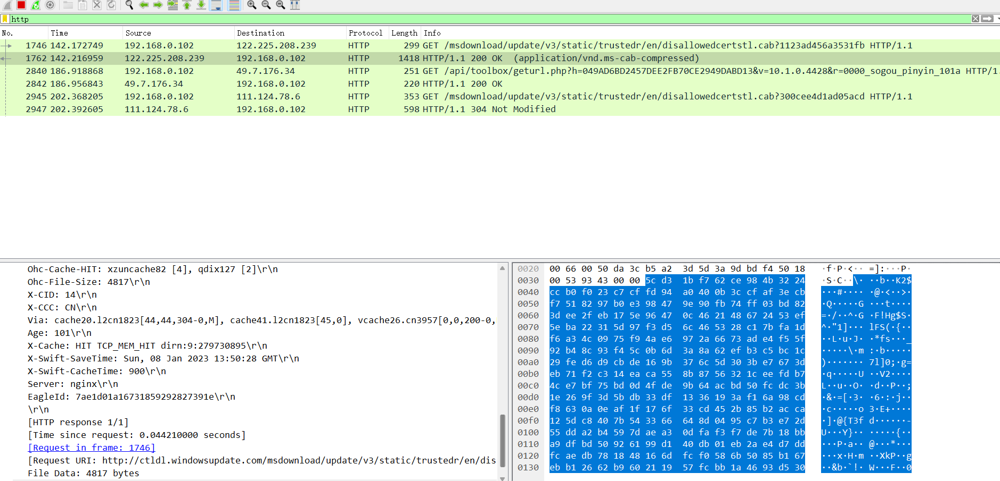
请在你捕获的包中找到 HTTP 应答包，查看应答的代码是什么，如：200, 304, 404 等。并仔细了解应答的头部有哪些字段及其意义。

200：交易成功；
304：客户端已经执行了GET，但文件未变化；
404：没有发现文件、查询或URl；
问题：刷新一次 qige.io 网站的页面同时进行抓包，你会发现不少的 304 代码的应答，这是所请求的对象没有更改的意思，让浏览器使用本地缓存的内容即可。那么服务器为什么会回答 304 应答而不是常见的 200 应答？
304表示可以直接在缓存区获取到需要的内容，不需要服务器再次回复对应的内容，减少服务器的一些工作，减小开销。如果采用200应答就是要完全的将内容发送给客服端，会增加服务器的一些开销。